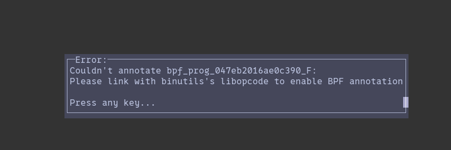

I have lost a few hours figuring out why when I build perf, it can not annotate BPF programs. I solved the issue before; did not document it, and found my self in the same situation again. Wasting time, checking all if all the libraries are installed. This note is to save my future self some time.
In order to support BPF annotation perf (at the moment) requires LIBBFD and LIBBPF. (To find the needed libraries search the error message “enable BPF anno”. The code is at “utils/annotate.c”) But having the libraries are not enough, you need to define BUILD_NONDISTRO flag when invoking make so that the make actually sets the appropriate flags.